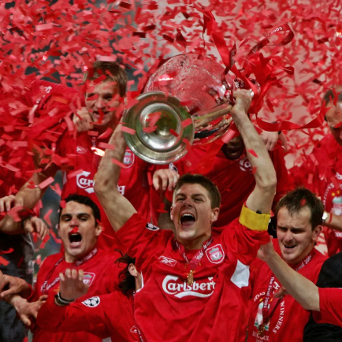
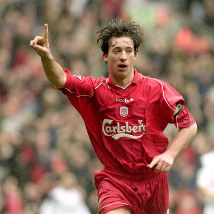
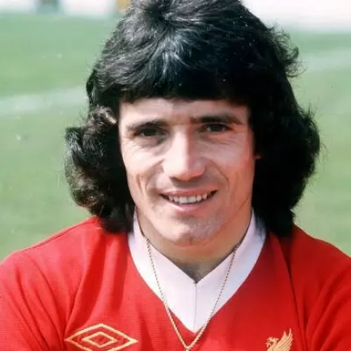
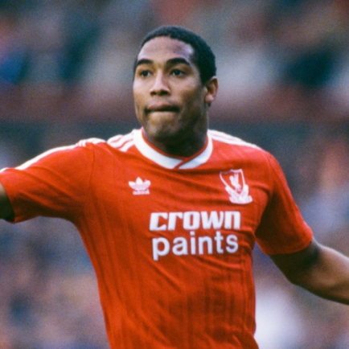

Liverpool
Antes de mais nada, o Liverpool Football Club ou LFC, é um dos maiores clubes da Premier League inglesa, localizado no condado de Merseyside, noroeste da Terra da Rainha. Dessa forma, foi fundado em 1892 por John Holding, após o mesmo comprar o lendário Estádio Anfield naquele ano. Assim, o novo dono do estádio propôs um aumento de aluguel entre £ 100 mil a £ 250 mil por ano. Contudo, o Everton, que usava o estádio há sete anos, se recusou a pagar o aumento proposto por Holding e se mudou para um novo estádio, o Goodison Park.
Títulos
Champions League: 6
Campeonato Inglês: 19
Supercopa da Inglaterra: 16
Mundial de Clubes: 1
Ídolos
- 
- 
- 
- 
Steven Gerrard
Não tem como falar de Liverpool sem falar de Steven Gerrard. Foram 26 anos tendo o Anfield Road como sua casa, desde sua infância até seus 35 anos. Gerrard sempre foi um torcedor do clube e isso fez com que a sua relação com a cidade e com o Liverpool fosse uma das maiores da história do futebol mundial. Ele conseguia unir a paixão pelo clube com sua gigantesca habilidade técnica. Gerrard dominava absolutamente todas as fases do meio-campo, tendo habilidades defensivas e ofensivas, que o fazia um jogador inteiramente completo. Além disso, era um autêntico líder, tanto que é quem mais esteve com a braçadeira de capitão no braço, com incríveis 473 jogos.
Robbie Fowler
Polêmico e artilheiro, Robbie Fowler é mais um dos grandes ídolos do Liverpool que começaram no clube ainda nas categorias de base, bem como Liddell, Carragher e Gerrard. Seu início no time de Anfield foi surpreendente e muito animador: 13 gols em suas 15 primeiras partidas no time principal dos Reds. Inesperavelmente, seu início foi tão incrível que nos anos de 1995 e 1996 faturou o prêmio o Jovem Jogador do Ano pela Associação dos Jogadores de Futebol da Inglaterra. Por conta de sua vida pública agitada e sua fama de marrento, Fowler foi constantemente criticado pela imprensa inglesa.
Kevin Keegan
O inglês Kevin Keegan chegou a ser duas vezes melhor jogador do mundo na sua carreira, jogando pelo Hamburgo, da Alemanha. Mas foi em solo inglês, mais precisamente em Liverpool, que Kevin Keegan chamou a atenção de todos os apaixonados por futebol. Pelo Liverpool, Keegan foi campeão várias vezes naquele grande time Red. Esteve presente nas conquistas do Campeonato Inglês de 1972/1973, 1975/1976 e 1976/1977. Também fez parte do elenco vencedor da Copa da Uefa de 1976/1977, tendo ótimas participações em gols naquela campanha.
John Barnes
Nascido em Kingston, Jamaica, John Barnes é um dos grandes ídolos da história do Liverpool, principalmente por conta de suas ótimas exibições no fim da década de 1980 e na década de 1990. Barnes é um dos principais ícones de sua geração, aquela que ganharia o Campeonato Inglês em 1990 e veria o clube enfrentar um longo jejum até 2020. Para a época, talvez John Barnes estivesse à frente de seu tempo. Era um dominador do meio-campo, principalmente fazendo a função de box-to-box, ou seja, aquele meia que percorre todo o campo de acordo com a exigência do jogo. Lógico que seu físico era peça vital de seu jogo, mas seu verdadeiro diferencial sempre foi a inteligência e a calma para saber agir no setor.
Anfield
O Estádio Anfield é um estádio localizado em Liverpool, Inglaterra. É a casa do time de futebol Liverpool FC e um dos estádios considerados 5 Estrelas pela UEFA. Também foi chamado de Fortress Anfield (Fortaleza Anfield), devido à dificuldade dos visitantes em vencer na casa do Liverpool.